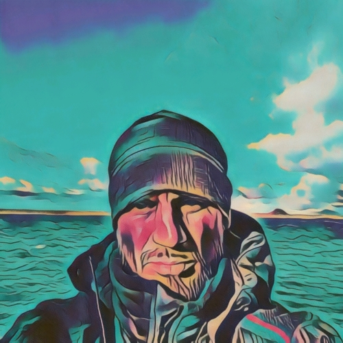

Sous le Ciel Austral: Récits des confins du Monde
Où Exploration rime avec aventure. sur les terres australes et Antarctiques francaises (TAAF) Et avec une passion qui m’anime : capturer l’essence de chaque instant de ces terres volcaniques et glaciales des Archipels de Crozet,Kerguelen et les Îles St Paul et Amsterdam.
Débutez l'Aventure ici